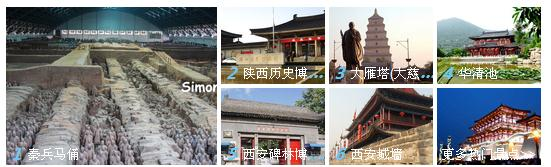

From Xianyang International Airport To Shaanxi Normal University, Yanta District
| Plan 1 | Take the airport bus to the train station (the fare is 25 RMB), then take 603 bus to stop Wu Jia Fen(Shaanxi Normal University)(the fare is 1 RMB ). |
Plan 2 |
It takes about 44.3 km/ 42 minutes, the taxi costs about 112 RMB, |
From the train station of Xi’an To Shaanxi Normal University, Yanta District
Plan 1 |
Bus route Take 603 bus to stop Wu Jia Fen |
Plan 2 |
Taxi The taxi costs about 15RMB, |


Huaqing pool
Huaqing pool is situated about 30 km east of the city of xi’an. historically, the western zhou dynasty saw the construction of the li palace on the spot. In the qin dynasty a pool was built with stones, and was given the name Lishan tang (the Lishan hot spring). the site was extended into a palace in the han dynasty, and renamed the li palace (the resort palace). in the tang dynasty, Li Shimin (emperor tai zong) ordered to construct the hot spring palace, and emperor xuan zong had a walled palace built around lishan mountain in the year of 747. it was known as the huaqing palace. it also had the name huaqing pool on account of its location on the hot springs. the tang dynasty emperor xuan zong and his favourite lady, yang gui fei used to make their home at frost drifting hall in winter days. when winter came, snowflakes were floating in the air, and everything in sight was white. however, they came into thaw immediately in front of the hall. it owed a great deal to the luke warm vapour rising out of the hot spring. this is the frost drifting hall that greets us today.
Great Wild Goose Pagoda
As the symbol of the old-line Xian, Big Wild Goose Pagoda is a well-preserved ancient building and a holy place for Buddhists. It is located in the southern suburb of Xian City, about 4 kilometers (2.49 miles) from the downtown of the city. Standing in the Da Ci'en Temple complex, it attracts numerous visitors for its fame in the Buddhist religion, its simple but appealing style of construction, and its new square in front of the temple. It is rated as a National Key Cultural Relic Preserve as well as an AAAA Tourist Attraction.
Shaanxi History Museum
Shaanxi History Museum is a state-level large-scale modernization of the museum is a magnificent Tang-style building, covers an area of about 70,000 square meters, construction area of over 50,000 square meters. It brings together the culture of Shaanxi, shows the development of Chinese civilization, Shaanxi Province in China in view of the history of the status of the state to invest a total of 144,000,000 RMB for the construction of the Shaanxi Museum of History, in June 1991 completion and opening.
The Museum of Qin Terra-cotta Warriors and Horses
One of the most significant archaeological finds in the world, this 16,300-square-meter excavation reveals more than 7,000 life-size terracotta figures of warriors and horses arranged in battle formations. The terracotta warriors and horses, created about 2,200 years ago, were found in 1974 on the east side of the tomb of the First Emperor Qin Shihuang (259 BC - 210 BC) near Xi'an. Emperor Qin Shihuang had Ying as his surname and Zheng as his given name. In 221 B.C., when he unified the whole country, named himself Shi huang Di and carried on the hereditary system.
The Xi’an Circumvallation
The Xi’an Circumvallation site is located at the center of xi’an city with the form of a rectangular. The circumvallation, with its wall height of 12 meters, bottom width of 18 meters and top width of 15 meters, consists of 4 city gates: changle gate to the east, anding gate to the west, yongling gate to the south and anyuan gate to the north. Its east wall has the length of 2590 meters, west wall of 2631.2 meters, south wall of 3441.6 meters and north wall of 3241 meters. It was constructed on the basis of the tang imperial city and under the strategic consideration of defense. The thickness of the wall is larger than its height and is very solid that cars can run on it. The existing circumvallation was built during 1373-1378 with the history of more than 600 years. It is one of the most famous wall construction in China’s history after the middle ages as well as the most preserved ancient one in China.